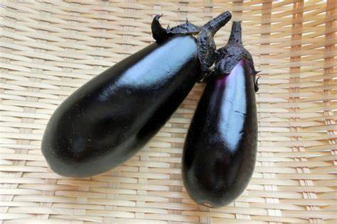
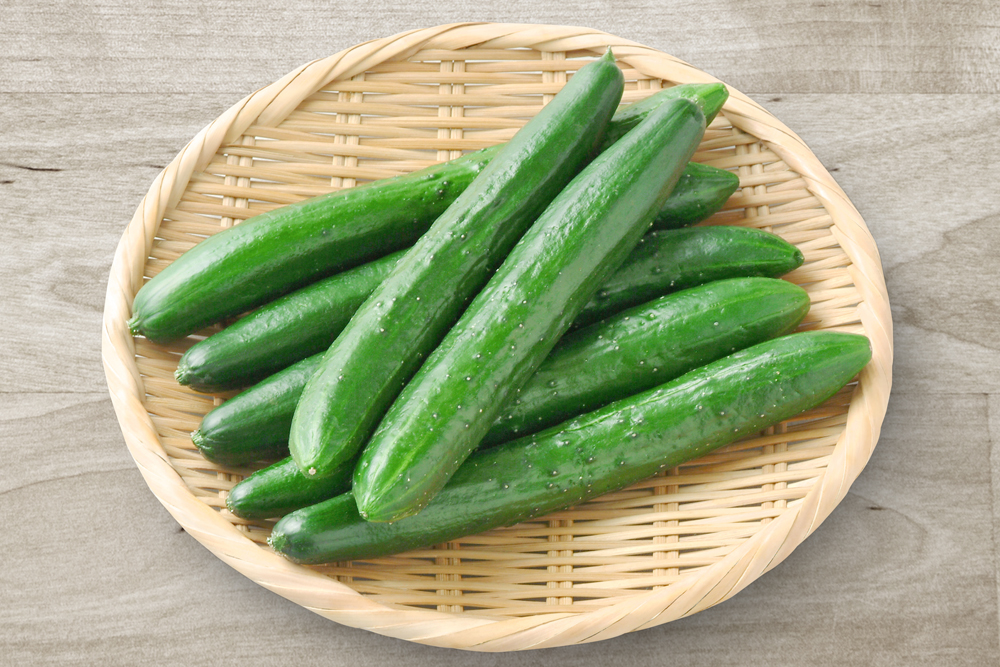
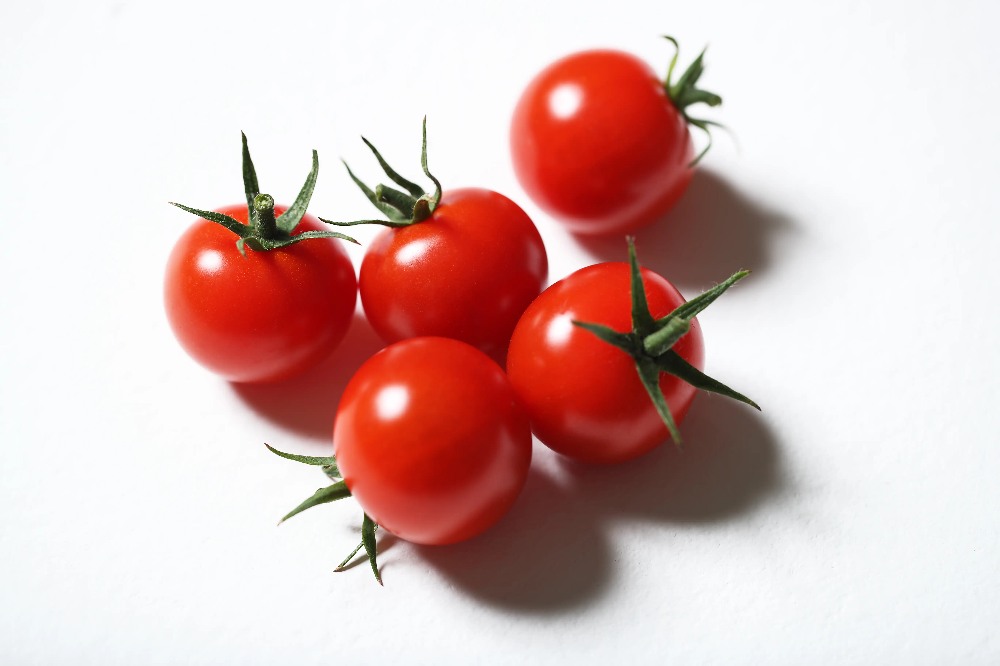
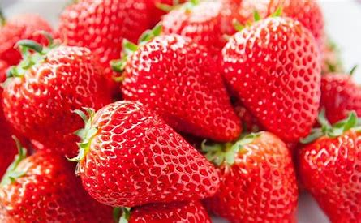

ナスを栽培する時にはアブラムシやハダニ、カメムシなどの害虫に注意が必要です。ナスを栽培している場所の周りに雑草が生えていると、そこから害虫が繁殖してナスに付着することがあるので注意が必要です。

初心者でも簡単に育てられることから、ガーデニングや家庭菜園で人気の高いきゅうり。栽培が簡単な反面、いろいろな害虫が好み、天敵が多いという欠点があります。

トマトは、虫たちにとってもごちそうです。家庭菜園で栽培しようとすると、多くの害虫が寄ってきます。葉や茎、花、果実について生育を阻害してしまいますから、しっかりとした対策と駆除が必要になります。

イチゴを収穫した後の株からは次々と子株ができるので、株を増やして何年も栽培することができます。糖度が高い分虫の餌にもなりやすく病害虫の対策をしっかりしましょう。